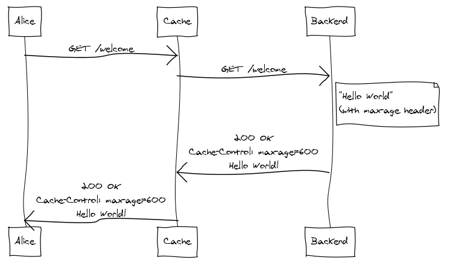
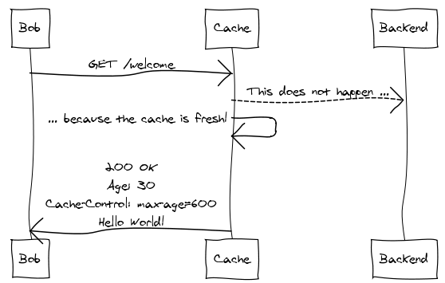
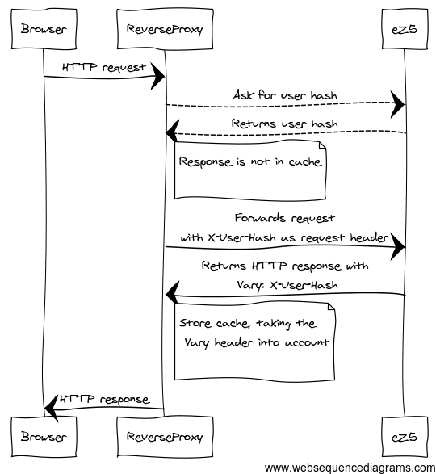
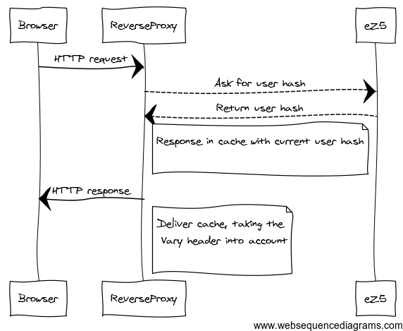

eZ Publish 5 cache unleashed
Available online at
http://lolautruche.github.io/ez/cache
About me
- eZ & Symfony Community member since 2007
- Part of engineering team since 2011
- Lead engineer eZ Symfony
- Webmaster of http://www.metalfrance.net, powered by eZ Publish (soon to be migrated to v5)
Levels of cache
- HTTP cache (aka gateway cache)
- Twig compiled templates
- Persistence cache
- Routing cache
- Service container
- Dumped classes
- Translations
Is it Symfony or eZ specific?
Symfony
- Base HTTP cache (reverse proxy written in PHP)
- Twig compiled templates
- Routing, service container, translations...
eZ Publish
- Persistence cache
- Location aware HTTP cache
- Context aware HTTP cache


Advantages
- Very fast
- Implemented in most browsers and reverse proxies
Drawbacks
-
Very static
- Caches the whole page
- Forget user personal information
- Cache TTL may seem arbitrary
http://tomayko.com/writings/things-caches-do
http://symfony.com/doc/current/book/http_cache.html
Location aware cache
- Makes it possible to bind a (cached) HTTP response to a Location
- When cache for the Location is cleared, all bound HTTP responses are cleared as well
use Symfony\Component\HttpFoundation\Response;
$response = new Response();
$response->headers->set( 'X-Location-Id', $myLocationId );
Context-aware HTTP cache
- HTTP cache is not meant to be context (e.g. user info) aware
- In eZ Publish 4 view cache was generated against user roles, policies and limitations
- Context-aware HTTP cache mimics this behavior
by making the response vary on the user hash - Much more performant
- New in 5.2 / 2013.07
use Symfony\Component\HttpFoundation\Response;
$response = new Response();
$response->setVary( 'X-User-Hash' );

